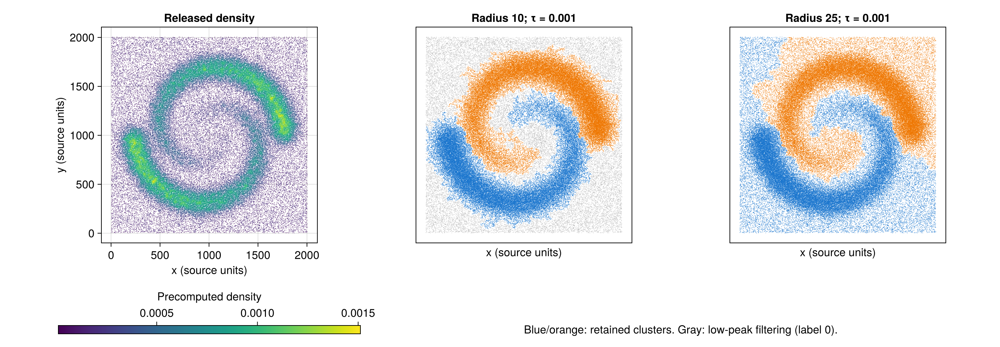
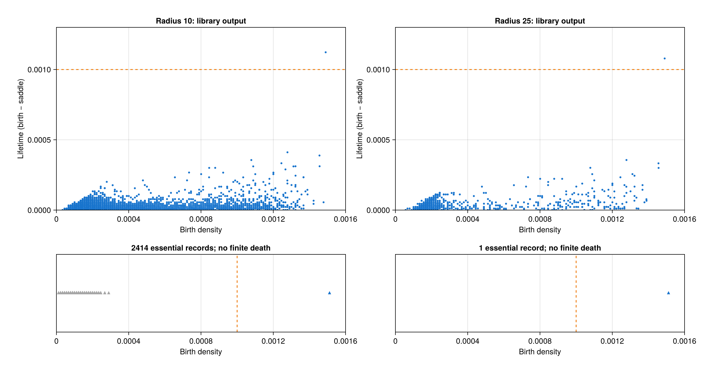

20 ToMATo: recovering the twin spirals
The JuliaTDA implementation recovers two spiral-shaped clusters from all 114,562 points in the original authors’ released benchmark. Both documented graph radii give the expected large-scale structure. At the smaller radius, the final height filter removes 17,688 points; at the larger radius, every point belongs to one of the two clusters.
This is a reproduction of the released benchmark and its README commands, with a qualitative comparison to the paper. The released file is a different realization from the 10,000-point example in the publication. An independent audit also reveals differences in some peak deaths and eight final assignments at the smaller radius. Those differences are retained in the outputs and discussed below.
20.1 The paper and the target
Frédéric Chazal, Leonidas J. Guibas, Steve Y. Oudot and Primoz Skraba introduced ToMATo in Persistence-Based Clustering in Riemannian Manifolds, Journal of the ACM 60(6), article 41 (2013). We use the authors’ journal manuscript, especially Figure 2, Section 5.1 and Figures 6–8.
The published twin-spirals example contains 10,000 points in the unit square. A radius graph with \(\delta=0.04\) and an inverse distance-to-measure density produce two prominent peaks. A smaller radius, \(\delta=0.02\), creates many disconnected background components; a final filter on peak height removes much of that background. A separate experiment uses roughly 100,000 points. These are useful targets because the two clusters are not convex, and background points can connect them geometrically.
The mechanism is the one developed in the ToMATo chapter: follow higher-density neighbors, measure how far each peak stands above its joining saddle, and merge peaks below a persistence threshold.
20.3 Reconstruct the analysis
20.3.1 Preserve the density
We use the supplied density rather than inventing missing estimation parameters. This reproduces the graph-and-clustering stages, but does not independently reproduce the original density estimation stage.
For clarity, the journal manuscript defines the empirical distance to measure as the root mean square of the distances to \(k\) nearest neighbors, and uses its reciprocal as density. With the local API, that definition would require an explicit summary function:
using MetricSpaces, Statistics
# Formula illustration, not used to replace the released density.
function rms_density(X; k)
rms_distance = distance_to_measure(
X, X; k=k, summary_function=d -> sqrt(mean(abs2, d)),
)
return 1 ./ rms_distance
endknn_density uses the reciprocal of the maximum neighbor distance. Its default is therefore a different estimator. Moreover, the released Density.h squares ANN’s already-squared neighbor distances inside its distance-based estimator. The archive does not document how the saved spiral density was produced. We preserve the supplied values and make no claim to recover the unpublished estimator settings from that wrapper.
20.3.2 Build an actual radius graph
The book’s demonstration graph combines a radius, a degree cap and a nearest-neighbor fallback. Here we need the complete radius graph: vertices are adjacent exactly when their Euclidean distance is at most the chosen radius.
using ToMATo, MetricSpaces, Graphs, DelimitedFiles
archive = "TDA_with_julia/reproductions/experiments/chazal2013/data/ToMATo_code.tar.gz"
member = "ToMaTo/inputs/spiral_w_density.txt"
raw = readdlm(IOBuffer(read(`tar -xOzf $archive $member`)), Float64)
X = EuclideanSpace(permutedims(raw[:, 1:2]))
density = raw[:, 3]
radius = 25.0
g = proximity_graph(
X, radius; min_k_ball=0, max_k_ball=length(X), k_nn=0,
)
(nv(g), ne(g), length(connected_components(g)))
# (114562, 5864965, 1)min_k_ball=0 disables the fallback, and max_k_ball=length(X) avoids truncation, including the self-entry in a radius query. The experiment checks every edge against the requested distance bound. The edge counts also agree with an independent radius-neighbor count.
20.3.3 Inspect persistence, then apply the documented threshold
_, peak_pairs = tomato(X, g, density, Inf)
tau = 1e-3
labels, _ = tomato(
X, g, density, tau; max_cluster_height=tau,
)
[count(==(k), labels) for k in 0:2]
# [0, 58955, 55607]The two occurrences of tau serve different purposes. The positional threshold merges peaks whose birth minus saddle density is less than tau. max_cluster_height then marks a remaining cluster as background when its absolute peak density is below that value. Label 0 is this filtered category, not a third spiral.
Run with Inf to obtain the merge diagram. Run with 0 to see unmerged modes. The library stores an essential class as [birth, Inf]; this is a no-merge sentinel, not a finite death density. Our figure places those records in a separate strip.
20.4 Results on every released point

| Radius | Graph edges | Connected components | Unmerged peaks | Cluster 1 | Cluster 2 | Filtered points |
|---|---|---|---|---|---|---|
| 10 | 941,251 | 2,411 | 8,613 | 48,215 | 48,659 | 17,688 |
| 25 | 5,864,965 | 1 | 942 | 58,955 | 55,607 | 0 |
At radius 10, 15.44% of points receive label 0. The retained populations trace the two spirals, while many sparse background components are removed. At radius 25, the graph is connected, all points are assigned, and the two spiral populations remain visible. These outcomes match the qualitative behavior described by the archive README.

The largest finite lifetime is separated from the next largest:
| Radius | Largest finite lifetime | Second finite lifetime | Selected threshold |
|---|---|---|---|
| 10 | 0.001122660 | 0.000411036 | 0.001 |
| 25 | 0.001078604 | 0.000356202 | 0.001 |
Thus the documented threshold lies inside the observed gap. One prominent finite peak survives alongside the highest essential peak. At the smaller radius, filtering removes the additional low-height essential classes.
We also varied the two thresholds together, following the archive’s convention:
| Threshold | Positive clusters, radius 10 | Positive clusters, radius 25 |
|---|---|---|
| 0 | 8,613 | 942 |
| 0.0005 | 2 | 2 |
| 0.00075 | 2 | 2 |
| 0.001 | 2 | 2 |
| 0.0012 | 1 | 1 |
The two-cluster result occupies an interval, rather than occurring at a single tested threshold. This is a sensitivity check on this file and density; it does not prove statistical significance or replace evaluating other graph scales. The full sweep, including 0.00025 and filtered counts, is saved as threshold_sweep.csv.
20.5 Audit the implementation
A reproduction should also test whether a plausible picture hides a computational difference. audit.jl implements an independent union-find sweep of the density graph. Final plots and cluster counts above still come from the unmodified ToMATo.jl implementation.
The audit makes two comparisons. First, it uses the library’s same strict condition that a neighbor must have higher density. This isolates merge bookkeeping. Second, it allows previously processed equal-density vertices, matching a deterministic total ordering of a graph superlevel filtration.
| Diagnostic | Radius 10 | Radius 25 |
|---|---|---|
| Library essential records | 2,414 | 1 |
| Exact graph components / total-order essential classes | 2,411 | 1 |
| Peak death records differing from audit with the same tie rule | 22 of 8,613 | 6 of 942 |
| Final assignments differing from audit with the same tie rule | 8 of 114,562 | 0 |
| Final assignments differing from audit with total-order ties | 11 of 114,562 | 0 |
There are two limitations in this checkout:
- Equal densities. The file has 62,293 distinct density values for 114,562 points. Strictly excluding equal-density neighbors can disconnect flat portions of the filtration. At radius 10 this produces three extra essential records. A graph superlevel filtration should have one essential class per connected component after all vertices appear.
- A root can become stale during a merge. Inside a vertex’s neighbor loop, the library stores a cluster root in
c_max. After merging that root into a higher one, it does not refreshc_maxbefore the next neighbor. The independent sweep updates the root after every union. A seven-vertex example incheck.jlverifies the correct deaths when three peaks meet at one saddle and exposes this difference in the library.
Not all differing peak identities represent differing diagrams: two radius-25 records exchange death values between peaks with equal births. Nevertheless, other death discrepancies remain. Both audited diagrams agree with the library on the two largest finite lifetimes, and the independent implementations also find two retained clusters at the selected threshold. At radius 25 their final assignments agree exactly. At radius 10 the eight disagreements with the same tie rule amount to approximately 0.007% of points.
The saved death audit includes every peak, its raw death, its audited death and a disagreement flag. The label files preserve raw and both audited assignments for every original row. No library source is changed by this experiment.
20.6 Run and verify
From the monorepo root, create or refresh the experiment’s private environment, then execute the analysis and checks:
JULIA_PKG_PRECOMPILE_AUTO=0 julia --startup-file=no \
TDA_with_julia/reproductions/experiments/chazal2013/setup.jl
julia --startup-file=no --pkgimages=existing --compiled-modules=existing --threads=2 \
--project=TDA_with_julia/reproductions/experiments/chazal2013/environment \
TDA_with_julia/reproductions/experiments/chazal2013/run.jl
julia --startup-file=no \
--project=TDA_with_julia/reproductions/experiments/chazal2013/environment \
TDA_with_julia/reproductions/experiments/chazal2013/check.jlThe scripts use the local ToMATo.jl and MetricSpaces.jl packages directly. The private environment avoids changing the book environment or the earlier Mapper reproduction. Julia 1.12.5 was used for the recorded run. The command reuses existing native package images and disables new ones because the host cache filesystem ran out of space during Makie linking; this affects startup and compilation, not the algorithm. tar is required to read the compressed archive. A missing archive is downloaded from the recorded source and checked before use. The chapter itself uses static code and precomputed images, so book rendering requires neither Julia execution nor network access.
Checks cover dataset integrity, row count, graph radius bounds, graph size, documented cluster sizes and filtering, the persistence gap, threshold sensitivity, audit agreement at radius 25, and a hand-verifiable three-peak merge. summary.csv contains the numerical comparison. provenance.toml records package-source fingerprints and the environment checksum; runtime.csv records observed timings, including first-call compilation where applicable.
20.7 What has been reproduced?
We recovered the released benchmark’s two prominent spirals, the effect of changing the graph radius, and the documented removal of disconnected background components. We did not recover the exact 10k realization, the unpublished density settings, or a numerical accuracy score from the publication. There are no source class labels, so reporting accuracy or adjusted Rand index would require invented ground truth.
The experiment demonstrates the intended geometric behavior with the JuliaTDA tools while documenting their current numerical limits. It also leaves a concrete next step: after merge bookkeeping and equal-density handling are repaired in a separate library task, rerun the same saved file and compare the raw outputs against the independent audit.